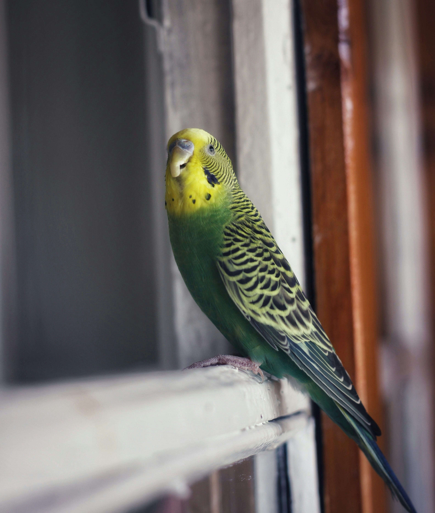

The cockatiel is a medium-sized parrot that is a member of its own branch of the cockatoo family
endemic to Australia. They are prized as household pets and companion parrots throughout the world
and are relatively easy to breed compared to other parrots. As a caged bird, cockatiels are second
in popularity only to the
budgerigar.
The cockatiel's distinctive crest expresses the animal's emotional state. The crest is dramatically
vertical when the cockatiel is startled or excited, gently oblique in its neutral or relaxed state,
and flattened close to the head when the animal is angry or defensive. The crest is also held flat but
protrudes outward in the back when the cockatiel is trying to appear alluring or flirtatious. When the
cockatiel is tired, the crest is seen positioned halfway upwards, with the tip of the crest usually curling
upward. In contrast to most cockatoos, the cockatiel has long tail feathers roughly making up half of its
total length. At 30 to 33cm (12 to 13in), the cockatiel is the smallest of the cockatoos, which
are generally larger at between 30 and 60cm (12 and 24in).
The "normal grey" or "wild-type" cockatiel's plumage is primarily grey with prominent white flashes on the
outer edges of each wing. The face of the male is yellow or white, while the face of the female is primarily
grey or light grey, and both sexes feature a round orange area on both ears, often referred to as "cheddar cheeks".
This orange colouration is generally vibrant in adult males, and often quite muted in females. Visual sexing
is often possible with this variant of the bird.
Cockatiels are usually quiet parrots in contrast to others. They can be very vocal and learn many spoken
words and phrases by mimicking. Usually, males are faster to learn speech, mimicking or singing; their calls
are also more varied.
Cockatiels can also be taught to sing specific melodies, to the extent that some cockatiels have been
demonstrated to synchronise their melodies with the songs of humans. Without being taught how to, both
male and female cockatiels repeat household sounds, including alarm clocks, phones, tunes or other birds
from the outdoors.
 |
 |
 |
 |
 |
| African Grey | Budgerigar | Cockatoo | Macaw | Indian Ringneck |
|---|---|---|---|---|

|
 |

|

|

|